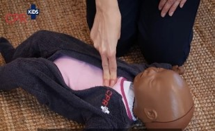
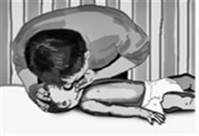
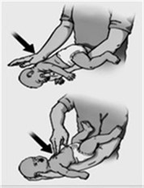

הורים יקרים,
הדרכה זו מיועדת לאנשים שאינם מקצוענים בהחייאה, והיא מבוססת על הנחיות של האיגוד האמריקאי למחלות לב (AHA, 2021 American Heart Association).
בטיחות ובדיקת הכרה
- ודאו כי לא נשקפת סכנה לכם ולתינוק.
- אם התינוק אינו מגיב ואינו נושם או נושם בצורה לא תקינה ואדם נוסף נמצא עמכם, בקשו שיחייג 101 (מד"א) ויזעיק עזרה.
- אם אין אדם נוסף בסביבה שיכול לעזור, חייגו 101 (מד"א) בכוחות עצמכם ופעלו בהתאם להנחיות.
- אם אתם נמצאים במקום שיש מכשיר דפיברילטור, בקשו להביא אותו, ועד להגעתו התחילו בביצוע עיסויי חזה.
הסדרת זרימת הדם באמצעות לחיצות חזה
- יש להשכיב את התינוק על גבו על גבי מצע יציב, קשיח וגבוה.
- יש לבצע 30 לחיצות בשיטה של שתי אצבעות במרכז של בית החזה. 
- יש לבצע לחיצות ללא ניתוק של האצבעות מבית החזה כאשר היד השנייה מונחת מתחת לגבו של התינוק תוך הטיה קלה של ראש התינוק לאחור לפתיחת נתיב אוויר.
- הקפידו על חזרה מלאה של בית החזה בין עיסוי לעיסוי.
- עומק: כ-4 ס״מ (בערך שליש של בית החזה).
בדיקת דרכי אויר
לפני ביצוע ההנשמה יש לבדוק נוכחות של גוף זר בחלל הפה. אם נמצא יש לנסות להסירו באמצעות אצבעותיכם.
הנשמה
- בצעו 2 הנשמות לאחר כל 30 לחיצות בבית החזה. 
- הימנעו מנשיפות אוויר מעומק ריאותיכם.
- יש לבצע את ההנשמה עד לעלייה המינימלית של בית החזה.
- אם בית החזה של התינוק אינו מתרומם, פתחו את פיו של התינוק ובדקו נוכחות של גוף זר. אם אתם מבחינים בגוף זר, הסירו אותו באמצעות אצבעותיכם.
- מחזור החייאה אחד כולל 30 לחיצות חזה ו-2 הנשמות. המשיכו בביצוע פעולות ההחייאה עד להגעת צוותי החירום, או עד שהתינוק יגלה סימני תנועה או ינשום בכוחות עצמו.
שאיפת גוף זר וחנק – תינוק מתחת לגיל שנה
זכרו: הפעולה הראשונה היא מניעה !
מזון: חשוב לחתוך את המזון בצורה קפדנית ומתאימה ליכולת האכילה של תינוק / ילד.
אין לתת לילדים מתחת לגיל 5 פיצוחים וסוכריות קטנות.
משחקים וצעצועים: לבחור משחקים על פי גילו של התינוק.
סימני אזהרה:
- חוסר יכולת לבכות או להשמיע קול.
- שיעול חלש שאין בו כדי להביא לפליטת הגוף הזר.
- קולות חלושים וצורמניים במהלך שאיפת אוויר.
- קושי לנשום.
- צבע עור כחלחל.
- אובדן הכרה (כאשר דרכי האוויר נותרים חסומים).
אם התינוק בהכרה
מצב שבו יש נשימה ״מצפצפת״ והתינוק לא מצליח להשתעל יש לבצע את הפעולות הבאות: בקשו מאדם שלידכם להזעיק עזרה - לחייג 101 (מד"א). אם אין אדם נוסף בסביבה שיכול לעזור, חייגו 101 (מד"א) בכוחות עצמכם ופעלו בהתאם להנחיות.
- השכיבו את התינוק על זרועכם, כשפניו פונות כלפי מטה. 
- תמכו את הזרוע על הברך. תמכו את חזהו של התינוק בידכם, כשאצבעותיכם אוחזות בלסתו התחתונה.
- הטו את ראש התינוק כלפי מטה, נמוך יותר מגובה גופו.
- בצעו 5 טפיחות בין השכמות של התינוק תוך שימוש בבסיס כף ידכם השנייה.
חשוב! אין לבצע את הצעדים שהוזכרו לעיל אם התינוק משתעל. אפשרו לו לנסות לפלוט את הגוף הזר בכוחות עצמו כאשר פלג הגוף העליון שלו מורם.
אם הגוף הזר אינו נפלט לאחר ביצוע של 5 טפיחות
- סובבו את התינוק כשפניו כלפי מעלה (כלפיכם). תמכו את גופו של התינוק על זרועכם וכן תמכו בראשו עם כף ידכם. תמכו את הזרוע על הברך.
- הניחו שתי אצבעות במרכז חזהו של התינוק.
- יש לבצע 5 לחיצות בשיטה של שתי אצבעות במרכז של בית החזה לעומק של כ-4 סנטימטרים (בערך שליש של בית החזה).
- המשיכו לבצע מחזורים של 5 לחיצות חזה ו-5 טפיחות בין השכמות של התינוק עד יציאתו של גוף זר או איבוד הכרה או עד הגעת כוחות הצלה.
- אם התינוק מאבד את הכרתו חדלו לבצע לחיצות חזה.
אם התינוק מאבד את הכרתו
אם התינוק מפסיק להגיב, מפסיק לנשום או מכחיל:
- בקשו מאדם שלידכם להזעיק עזרה - לחייג 101 (מד"א). אם אין אדם נוסף בסביבה שיכול לעזור, חייגו 101 (מד"א) בכוחות עצמכם ופעלו בהתאם להנחיות מוקד מד"א.
- השכיבו את התינוק על משטח קשיח, יציב וגבוה והתחילו החייאה הכוללת עיסוים והנשמות.
- לפני ביצוע ההנשמה הביטו בחלל הפה, אם קיים גוף זר בחלל הפה יש להוציאו במידת האפשר באמצעות אצבעות.
- יש להמשיך לבצע החייאה ולא להפסיק עד הגעה של כוחות ההצלה אן חזרה להכרה.
בכל שאלה ניתן לפנות אל הצוות המטפל.
בברכת בריאות איתנה.